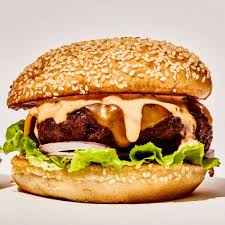
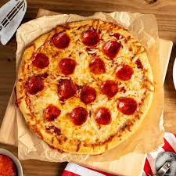
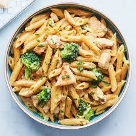
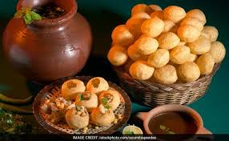
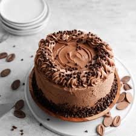
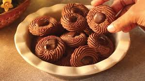

food menu card






Ingredients
burger buns
salt
paprika
potato pati
garlic
oats
pepper
eggs
bread crumps
ketchup
green Onion
onion powder
quinoa
bell pepper
mayonis

Ingredients
1 can (8 oz each) Hunt's® Tomato Sauce-No Salt Added
1/4 cup grated Parmesan cheese
1/4 teaspoon dried oregano
1 prebaked thin pizza crust (12-inch)
1 cup shredded part-skim mozzarella cheese
1/3 cup sliced pepperoni
Ingredientss
Ingredients
▢150 g Pasta of your choice 5 oz or 1 ½ cups
▢1 tablespoon Olive oil or Butter
▢½ Onion finely chopped
▢3 to 4 Garlic cloves finely chopped
▢4 oz Mushroom chopped
▢½ Bell pepper or capsicum any color chopped
▢1 teaspoon Italian seasoning
▢½ teaspoon Red chile flakes optional
▢Salt to taste
For the white sauce
▢2 tablespoon Butter or Olive oil
▢2 tablespoon All purpose flour
▢1 ¼ to 1 ½ cups Whole Milk
▢Nutmeg a small pinch
▢Black pepper powder to taste
▢Salt to taste
▢2 tablespoon Cheese grated or 1 cheese slice
Ingredients of Golgappa Bhel Puri
1 Serving
3 golgappa
1 tablespoon finely chopped tomato
3 tablespoon sev
1 1/2 teaspoon raw peanuts
1/2 cup puffed rice
1 tablespoon boiled potato
2 tablespoon chana dal
1/2 tablespoon lemon juice
Ingredients for Chocolate Drip Cake
All Purpose Flour–
gives this cake the best crumb
Cocoa
I recommend using Dutch process for the richest chocolate flavor
Baking Powder & Baking Soda–
helps to leaven the cake and give it its fluffy texture
Salt–
brings out all the flavors in the cake
Butter–
make sure it’s softened, used in the cake and frosting
Sugar–
granulated white sugar is used to sweeten and add moisture to the chocolate cake
Eggs
– make sure they’re room temperature
Vanilla–
I recommend vanilla bean paste for the best flavor but vanilla extract works as well
Buttermilk–
helps to make the cake super moist
Coffee–
hot coffee is used in the cake batter to accentuate the chocolate flavor a
Powdered Sugar–
used to sweeten the dark chocolate buttercream
Heavy Cream-
Ingredients
1 ½ cups white sugar
1 cup butter, softened
2 large eggs
2 teaspoons vanilla extract
2 cups all-purpose flour
⅔ cup cocoa powder
¾ teaspoon baking soda
¼ teaspoon salt
2 cups semisweet chocolate chips
½ cup chopped walnuts